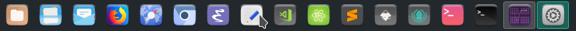

Suru++ 25
v25 or XXV
- I have increased from 2,2k to 4,7k icons!
- All 4,7k icons of the folder
appshave been redesigned; - I have fixed the trash icons in KDE;
- I have fixed the wrong session icons;
- Suru++ has won the new folders with colour of Linux Mint:

- The file managers are no longer same, now are different and modern, and redesigned by Pavel Dimens (@pdimens):

- Hundreds Steam games icons are supported officially:

- Some icons have been redesigned by Pedro Gauna (@lapega).
v20 3.0 or XX 3.0
It is one of biggest changes made during one month in this icons theme:
- Fixed by @SmartFinn:
- Deleted the executable bit from files for security issues.
- Fixed icons with rendering issues on old systems.
- Removed some broken symlinks.
- By me:
- Removed all Gravit Designer base64 and metadata which caused rendering bugs.
- Reduced from 175MB to 110MB!
- Vectorised and improved the highlighting border in KDE, you can compare:
Before:

After:

- Improved the ugly colours of some icons as Activity Monitor and Terminal.
- Suru++ conservative and traditional monochromatic icons have been replaced for Papirus colourful and monochromatic icons because they fit very well with Suru++ 20.
- The grey colour of monochromatic icons have been replaced with the new cyberpunkish, elegant andmodern colour based on Papirus:
#5c616c. - New countries flags (in development).
- Designed by @jcuenod:
- Zotero
- Designed by @Pronink:
- Azure Data Studio
- Added icons:
- Bookworm
- Clion
- DataGrip
- Etcher
- FontBase
- Goland
- Howl
- JetBrains Toolbox
- Joplin
- MPS
- Natron
- Neovim
- NextCloud
- Rider
- RubyMine
- SIgnal
- TeXmacs
- TeXstudio
- Unity 3D
- VMWare Viewer
- WebStorm
- Added 58 Flatpak icons:
- Android Studio
- Audacity
- Avidemux
- Blender
- Bookworn
- Corebird
- Darktable
- Discord
- Dolphin EMU
- Elisa
- Emacs
- Filezilla
- Firefox
- Firefox Developer
- Firefox Nightly
- GCompris
- Geogebra
- GIMP
- GNU Cash
- GPodder
- HexChat
- Inkscape
- JDownloader
- Joplin
- KDEConnect
- Kdenlive
- Keepass
- Krita
- LibreOffice
- Mendeley
- Minitube
- MonoDevelop
- Musecore
- MyPaint
- Neovim
- NextCloud
- Octave
- Okular
- OpenShop
- PhotoQT
- Picard
- Pitivi
- Postman
- Pycharm
- Remmina
- Signal
- Spotify
- Steam
- Sublime Text
- SuperTux
- Telegram
- TeXstudio
- Thunderbird
- Transmission
- Tuxpaint
- Viber
- VLC
- VSCode
- Zim
v20.1.3 or XX 1.3
- Fixing the broken symlinks.
- The folders
placesfixed by @SmartFinn:- Remove
-bluesuffix from symbolic icons. - Replace duplicate
places/symbolicicons to symlinks. - Remove
-bluesuffix from 16px icons. - Replace duplicate
places/16icons to symlinks. - Delete color folder icons from
places/scalable(forbuild_color_folders.sh). - Fix several symlinks in
places/scalable. - Add missing symlinks to color folders.
- Remove
- Adding new folders colours.
- Add new three colours of folders — blue grey, custom and teal.
- Adding the new folders 96 and 128 and retina folders.
- Improving the
index.theme. - Correcting the misspelling of an icon to get well displayed.
- Fixing the missed directories
extensions,logandpluginin the fileindex.theme. - Adding 5 missed icons.
- Improving the monochromatic icons of Octopi.
v20.1.2 or XX 1.2
- Added icons:
- Android File Transfer
- Boxes
- Deepin Image Viewer
- Geary
- iBus Anthy
- iBus KKC
- OpenJDK 10
- Meld
- Notepad++
- Postman
- QT Linguist
- QT4 Linguist
- Visual Code Insiders
- xTerm
v20.1.1 or XX 1.1
Thanks/Спасибо to @bzhmurov for adding the Belarusian, Russian and Ukrainian translations in the index.theme!
v20 or XX
Welcome to the new and sexy Suru++ XX!
- Tested on many distributions and passed well.
- Redesigning the logotype.
- Adding the new screenshots.
- Removing the issue templates.
- Readjusting the AUTHORS, CONTRIBUTING, COPYING, LICENSE and README.md.
- Dropping the desktop files folders.
Officially supported for KDE and more than 20 distributions!
v16 to v19
- Suru++ 16 - Alpha 1
- Integrating the Suru++ Asprómauros into Suru++ to end all bugs and to make compatible with KDE and XFCE. Initialising the folder actions.
- Suru++ 17 - Alpha 2
- Redesigning the folders
actionsandapps.
- Redesigning the folders
- Suru++ 18 - Alpha 3
- Finalising the folder
appsand initialising the foldercategories.
- Finalising the folder
- Suru++ 19 - Alpha 4, 5, 6, 7 and Beta
- Finalising the folders.
- Adding some missed icons requested by the users at the GitHub issues.
- Adding more than 5 colours of places, based on Alexey Varfolomeev’s Papirus places.
- Adding 1k new mimetypes, based on Numix mimetype icons.
- Correcting the bad quality of Catfish, Cherrytree and Google Chrome.
- Fixing the wrong icons in Dolphin sidebar.
- Fixing the bugs of icons as Octopi, Inkscape and Sublime Text in KDE environment.
- Readjusting many times the
index.theme. - Removing the cursor theme.
v15
- Belarusian, Russian and Ukrainian translations added. Thanks to @bzhmurov!
- Fixed the wrong icons of Clocks
- Icons designed by me:
- Added missed applications icons:
- 1Password
- 2GIS
- 3Depict
- 4chan
- 4kvideodownloader
- 4Pane
- 7z
- 9gag
- AArdict
- Abgx 360
- Abricotine
- aBrowser
- Accerciser
- Accessories - Archiver
- Accessories - Document Viewer
- Accessories - Image Viewer
- Accessories - Media Converter
- Accessories - Painting
- Accessories - Podcast
- Accessories - Screenshot
- Accessories - System Cleaning
- Accessories - Thesaurus
- ACE Stream Player
- Acetino
- AChemTool
- AcidDrip
- Actiona
- Agave
- Agenda
- Albert
- Alevt
- Alexandra
- Almanac
- AlphaPlot
- Alsamixer
- Altyo
- Amarok
- Amazon Canada
- Amazon China
- Amazon France
- Amazon Germany
- Amazon Great Britain
- Amazon Italy
- Amazon MP3 Store
- Amazon Spain
- AMD Ati
- AmSYnth
- Anaconda
- Ancestris
- Android ARC
- Android SDK
- AngrySearch
- Anjuta
- Anki
- Antimicro
- AnyDo
- APTIK Battery Monitor
- AptonCD
- Apx
- Aquemu
- Arch Linux
- Ardour
- Arduino
- Areca
- Argouml
- Ariamaestrosa
- Ark Client
- Arronax
- ArteFetcher
- ArteHashit
- ArtePlayMyMusic
- ArtePlayMyVideos
- ArteScrenshot
- ArteWebpin
- Arts
- AS
- Asbru
- ASC
- ASCII Design
- ASE
- Astah
- Atunes
- Auale
- Audacious
- Audacit
- Audience
- Audio Recorder
- AudioBook
- Aural Quiz
- Autocad
- Autokey
- Avast
- Avidemux
- Avocode
- AWN Applet
- AWN Applet Digital Clock
- AWN Manager
- Azureus
- B1 News
- Beyond Compare
- Bugzilla 3
- Cerebro
- ChmSee
- Colour Profile
- Compton (@Magog64)
- Eclipse JEE
- EOm (@Magog64)
- Files (Nemo)
- Folder Remote
- Foxit Reader
- GNOME MPV
- Google Translator
- GTK DiskFRee
- GTK Hash (@Magog64)
- GTK Select Colour (@Magog64)
- GTK3 Demo
- GTK3 Widget Factory
- GTK4 Demo
- KDiskFree
- Kig
- Kiten
- KMix
- KmPlot
- KStars
- lFTP
- LightDM SEttings
- MiamPlayer
- MidnightCommander
- Mozo (@Magog64)
- Oracle Java 8
- Osmo
- Panel Drawer
- PHPSTorm
- PyCharm
- Python 3.5
- RClock
- Remmina (@Magog64)
- Revelation
- Rygel
- Seahorse Preferences
- Softare Properties GTK (@Magog64)
- Software Center
- Synthesia
- TRON (by @Magog64)
- Typora
- Vidiot
- Yarock
- Added categoric applications icons in the folder
apps:- Applications - Accessories
- Applications - Development
- Applications - Fonts
- Applications - Games
- Applications - Graphics
- Applications - Internet
- Applications - Multimedia
- Applications - Office
- Applications - Other
- Applications - PHP
- Applications - Python
- Applications - Science
- Applications - System
- Applications - System Orange
- Added Adobe applications icons:
- Adobe Flash
- Adobe After Effects
- Adobe Audition
- Adobe Bridge
- Adobe Dreamworks
- Adobe Encode
- Adobe Fireworks
- Adobe Illustrator
- Adobe InDesign
- Adobe Lightroom
- Adobe Photoshop
- Adobe Prelude
- Adobe Premiere Pro
- Adobe Speedgrade
- Adobe Update
- Adobe Widget Browser
- Added Debian’s Gnome Control Centre icons for @bzhmurov:
- Appearance
- Accessibility
- Background
- Battery
- Bluetooth
- Browser
- Clock
- Colour Profile
- Date and Time
- Details
- Display
- Keyboard
- Language and Region
- Mouse
- Multimedia
- Network
- Notifications
- Panel
- Passwords
- Power
- Privacy
- Printer
- Sound
- Tablet/Wacom
- Users
- Wallpaper
- Added missed Deepin icons:
- Deepin File Manager
- Deepin Introduction
- Deepin App Store
- Deepin Boot Maker
- Deepin Calculator
- Deepin Clne
- Deepin Cloud Print
- Deepin Cloud Scan
- Deepin Debian Installer
- Deepin Editor
- Deepin Feedback
- Deepin Font Installer
- Deepin Graphics DRiver
- Deepin Manual
- Deepin Movie
- Deepin Multitasking View
- Deepin System Monitor
- Deepin Terminal
- Deepin Toggle Desktop
- Added missed Linux Mint icons:
- Colour Profile
- Netspeed Applet
- Panel Clock
- Panel Notification
- Power Management
- Preferences Colour Profile
- Added missed Manjaro icons.
- Added missed XFCE and XFCE4 applications icons.
- Added Steam icons:
- 0 A.D.
- 8 Ball Pool
- Acorn
- Adventure Editor
- Alien Arena
- Amnesia Dark Descent (by @Magog64)
- And Yet It Moves
- Aspette
- Assault Cube
- Astromenace (by @Magog64)
- ATomic
- Awesomonauts (by @Magog64)
- Halo
- Origin
v14
Designed @Bonandry:
- Improved icons in the
apps,mimetypesandplaces. - Added icons:
- Winepak
- Fixed GSConnect icons.
Designed by me:
- Added missed icons:
- GitKraken
- HardInfo
- VSCode Exploration
- Added Manjaro missed icons:
- Bookmarks Organizer
- HP Logo
- IPython
- KDEsvn
- Manjaro Guide
- Manjaro Hello
- Networks Wired
- QT4 Assistant
- QT4 Bus Viewer
- QT4 Designer
- QT4 Logo
- Yaourt GUI
- Added online Microsoft icons on Manjaro:
- Microsoft Excel
- Microsoft Office
- Microsoft OneNote
- Microsoft Outlook
- Microsoft PowerPoint
- Microsoft Skype
- Microsoft Word
v13.4
- Icon designed by me:
- LyX
v13.3
Icons designed by me:
- Added GNUstep apps icons:
- ACLock
- GNUstep Address Manager
- GNUstep Calculator
- GNUstep Camera
- GNUstep Charmap
- GNUstep DictionaryReader
- GNUstep GNUMail
- GNUstep Grr
- Added icons:
- Application Finder
- EdenMath
- Evince Previewer
- Midnight Commander
- Mutt
- Policy Kit Authentication Agent
- Sigil
- xfig
- xpdf
- Zipper
- Added
placesicons:- Folder Applications (similar to macOS)
Icons designed by @Bonandry:
- Added icons:
- Google Music Player
- MAME
v13.2
- Improved some icons in
apps/16,apps/24,apps/scalable,devicesandplaces. - Added icons:
- Fcitx
- GNOME Shell Extensions
- OpenShot
- Software Boutique
- To-do App
- Added MATE icons:
- MATE Eiciel
- MATE Panel
- MATE Session Properties
- MATE System Log
- MATE
- Ubuntu MATE
v13.1
- Due to @paullinuxthemer’s suggestions, I and @Bonandry decided to separate the GTK, icons themes and wallpapers for the new repositories for facilitating the users who wish to download only the icons themes. Besides, the desktop and cursor theme will be maintained in the Suru++.
- We have announced that @gusbemacbe officialised and released the PPA od Suru++ which comes with a full pack:
The full pack comes with all gifts - Suru++ cursor, GTK and icons themes and wallpapers. Be happy to receive daily updates.sudo add-apt-repository ppa:gusbemacbe/ppa sudo apt-get update sudo apt install suru-plus-pack - The good news is that, you are not any more required to depend on Sam Hewitt's icons and other Suru++ packs, because we have purged the dead symlinks.
- We have switched to GPL3.
v13
We have made a biggest update, biggest than v11. :-D We have good news...
- Added and fixed missed icons in the folders
actions:- Blueman
- DBLatex
- KStarts Planet
- Fixed dead symlink icons in
actions,categories,devices,emblems,mimetypes,placesandstatus. - Added cursor theme for Suru++ icons theme.
- Added provided desktop files.
- Added SGT Puzzles icons.
- Added categoric folders:
- folder-macos
- folder-windows
- gnome-fs-home
- Added categoric applications (
places) and folders (categories):- 3D
- Activity Journal
- Applications
- Archive ZIP
- Arcade
- Chat
- Community
- Drawing
- File Sharing
- Geology
- IDE
- Libraries
- LISP
- OCaml
- Perl
- PHP
- Preferences - Autocompletion
- Preferences - Calendar and Task
- Preferences - Certificates
- Preferences - Composer
- Preferences - Desktop Peripherals
- Preferences - Desktop Peronsal
- Preferences - Mail Accounts
- Preferences - Power
- Preferences - System Bluetooth
- Preferences - System Directory
- Preferences - System Network Proxy
- Preferences - System Network
- Preferences - System Privacy
- Preferences - System Windows
- Profiling
- Publishing
- Puzzles
- Python
- Role Playing
- Ruby
- Sports
- System Orange
- Version Control
- Added devices:
- Drive Hard Disk
- Drive Removable Media
- Added applications icons:
- 7zip
- AirCrack
- App Grid
- Armory
- Atril
- Audicius
- Avant Window Navigator
- Avoadro
- AWN Plugins
- AWN Settings
- Beryl
- Blue Radio
- Blueman
- Cantor
- Compiz
- Color Grab
- Deepin Screenshot
- Desktop Environment GNOME
- Desktop Environment KDE
- Desktop Environment LXDE
- Desktop Environment MATE
- Desktop Environment XFCE
- Devianart
- Display Preferences
- DVD Player
- Emeral
- Engrampa
- Fedora Settings
- Firefox Aurora
- Gallery
- GNOME Power Statistics
- GNU Emacs Client
- Google Chrome Unstable
- Grave
- GTK Network
- GTK3 Icon Browser
- GTranslator
- Gufw Firwall
- GV
- Haguichi
- HP Toolbox
- Input Keyboard
- Input Mouse
- Input Tablet
- KDE Accunt Wizard
- KDeconncent
- KeePassxc
- KOrganizer
- KPhoto
- KSysGuard
- Labplot
- LeafPad
- Lightwork
- MATE Power Satistics
- Menu Libre
- MugSHot
- Octave Backend
- Pick (Kryogenix)
- Pinegrow Web [Pro]
- POlari
- Preferences - Desktop Keyboard Shortcuts
- Preferences - Desktop Screensaver
- Preferences - Ubuntu Panel
- QV4
- Screensaver (KDE)
- Signon UI
- Slide Wall
- Snappea
- Stremio
- Syntevo Smart Git
- TeX Doctk
- Time Admin
- Todo
- Tracker
- Unity Display Panel
- Unity Online Accounts
- Unity Sound Panel
- VBox
- vdochat
- Video Chat
- Vuze
- Winetricks
- XMind
- XFCE Sensors
- XN Sketch
- XSCreensaver (XFCE)
- XVKBD
- Yad
- Fixed missed icons already created:
- Games
- Geary
- Gedit
- Inkscape
- KIPI Expo Blending
- LightGDM Greeter Settings
- Software Update Available
- Super Tux Kart
- VLC
- Added distributions icons:
- Antergos
- CentOS
- Deepin OS
- Elementary
- Endless
- FreeBSD
- KDE neon
- Kubuntu
- Lubuntu
- Linux Mint
- LXLE
- macOS
- Mageia
- Manjaro
- Nitrux
- openBSD
- Parrot Security OS
- Porteus
- Solus
- Steam OS
- True OS
- Ubuntu Budgie
- Ubuntu Mate
- Ubuntu Studio
- Windows
- Xubuntu
- Zorin
v12
- Added categoric applications (
places) and folders (categories):- Accessories
- Aerospace Engineering
- Architecture
- Astronomy
- Biology
- Board Games
- Card Games
- Chemistry
- Development
- Education
- Education - Language
- Education - Mathematics
- Education - Science
- Electronics Engineering
- Engineering
- Fonts
- Games
- Geography
- Graphics
- History
- Interface Design
- Internet
- Java
- Languages
- Linguistics
- Laws
- Management
- Mathematics
- Maths
- MonoDevelopment
- Multimedia
- Office
- Painting
- Photography
- Physics
- Programming
- Robotic Engineering
- Science
- System
- Utilities
- Viewers
- Web Browsers
- event-birthday
- GNOME Control Centre
- GNOME Development
- GNOME Globe
- GNOME Graphics
- GNOME Joystick
- GNOME Multimedia
- GNOME Panel
- GNOME Settings
- GNOME System
- GNOME Translate
- GNOME Utilities
- GTK Preferences
- KDE Control
- preferences-desktop-accessibility
- preferences-desktop-display
- preferences-desktop-font
- preferences-desktop-icons
- preferences-desktop-keyboard
- preferences-desktop-locale
- preferences-desktop-peripherals
- preferences-desktop-personal
- preferences-desktop-theme
- preferences-desktop-wallpaper
- preferences-system-network
- preferences-system-parental-control
- preferences-system-power
- preferences-system-time
- RedHat Accessories
- RedHat Games
- RedHat Graphics
- RedHat Internet
- RedHat Office
- RedHat Preferences
- RedHat Programming
- RedHat Sound and Video
- RedHat System Tools
- XFCE Development
- XFCE Games
- XFCE Graphics
- XFCE Internet
- XFCE Multimedia
- XFCE Office
- XFCE System
- XFCE Utilities
- Added some emojis.
- Added KDE icons:
- Calligra Flow
- Calligra Kexi
- Cantor (scientific statistics and analysis)
- Echo Nest
- KAlarm
- KDE Connect
- KEuroCalc
- KFloppy
- Kipi DNG Converter
- KIpi EXPO Blending
- KMix
- KRunner
- KSysGuard
- KWallet Manager
- KwikDisk
- Lokalize
- Nootka
- Plasma Search
- Ramme
- Added icons:
- Backups
- BitTorrent Sync (btsync)
- Caprine
- Citrix Receiver
- CPU Frequency
- Diffuse
- Foxit Reader
- Gemini
- Genymotion
- Goa Panel
- Groovy
- Messenger for Desktop
- NPM Applet
- QMPlay2
- Added MATE icons:
- Invest Applet
- Improved missed icons already created:
- Déjà Dup
- Disk Usage Analyser
- Document Viewer
- Eye of GNOME (eog)
- Evince
- Facebook Messenger
- File Archiver
- Google Chrome
- GNOME Logs
- GNOME Usage
- Image Viewer
- Inkscape
- Insync (folders)
- Kexi
- Log Viewer
- Network Manager
- Octave Backend
- Power Stats
- Preferences Desktop Icons
- Session Properties
- Statistics
- Virtual Box
- XTerm
v11.1
- I have removed and moved the Suru++ Lubuntu to a new repository, designed for Lubuntu users.
v11
- We have made a bigger update - big addition of Ubuntu GNOME, KDE and XFCE and Maths icons, distributions logos icons, improvements of icons and we have fixed the icons bugs in KDE, purging the PNG images and rewriting the icon in pure SVG.
- We have created an alias of folders for Suru++ Lubuntu folder.
- We also have added egg easters, we just won't tell which icons. We let you discover yourself and guess. ;-)
- Added Ubuntu GNOME icons with improvements:
- Apt URL
- Artikulate
- Dr. Konqi
- Files (Nautilus)
- Franz
- GNOME Shell
- HP LaserJet 1018/1020
- MIME Type Editor
- Mouse & Touchpad
- Mutter
- Peek
- Run Software
- Portal
- Search
- Tweaks
- View file
- Wacom Tablet
- Where am I?
- Added KDE icons with few improvements:
- Apper
- Blogilo
- Breeze Settings
- Calamares
- Calligra Sheets
- Calligra Stage
- Calligra Words
- Cuttlefish
- FLUID
- Git Cola
- Homerun
- Image Writer
- Kaffeine
- KAlgebra
- KAlgebra Backend
- Kamoso
- KAnagram
- KAtomic
- KBlocks
- KBlogger
- KChart
- KDiamond
- KDE App
- KDE Calc
- KDE Clock
- KDE Develop
- KDE Frameworks
- KDE GTK Configuration
- KDE Log Viewer
- KFind
- KGet
- Kile
- Kipi Panorama
- Kiriki
- KJumpingCube
- Kleopatra
- KLines
- KMag
- KMenu Editor
- KMouse Tool
- KMouth
- KNetAttach
- Konversion
- KNotes
- Kolf
- Kolour Paint
- KOrganizer
- KPat
- KPresenter
- KRename
- Kronometer
- KRDC
- Krfb (Desktop Sharing)
- KRuler
- KSpread
- KTimer
- KTip
- KTnef
- KTorrent
- Kube Mail
- Kuser
- Kwrite
- KWord
- Mail Client
- Muon
- Photo Layouts Editor
- Picmi
- Planet KDE
- Plasma Desktop Workspace
- Plasma Media Center
- Plasma Mobile Phone
- Plasma Windowed
- Preferences Desktop Font Installer
- QElectroTech
- Quassel IRC
- rekonq
- Ring KDE
- Ruby
- Sheets
- Skanlite
- Subtitle Composer
- Sweeper
- System Setting
- Utilities Energy Monitor
- Telepathy KDE
- Telephony
- Ubiquity KDE
- Umbrello UML Modeller
- USB Creator KDE
- Vector Magic
- Word
- Yakuake
- Added XFCE icons:
- Kvantum Manager
- Added icons generally:
- Bitorrent
- Calibre eBook Editor
- Calibre Viewer
- Claways Mail
- Converseen
- FreeMind
- Hotspot
- KeePass
- LastPass
- MatLab
- Master PDF Editor
- Mendeley Desktop
- q4wine
- QupZilla
- Rosegarden
- Sage Notebook
- SMTube
- Stage
- Yandex Browser
- Added categoric apps icons:
- Astronomy
- Biology
- Chemistry
- Geography
- History
- Laws
- Linguistics
- Maths
- Multimedia
- Physics
- Programming
- Added distributions icons:
- Arch Linux
- Debian
- Fedora
- Frugalware
- Gentoo
- Linux Mint
- Mandriva
- OpenSUSE
- Slackware
- Added Maths icons:
- CoqIDE Proof Assistant
- FreeMat
- Geomview
- GfsView
- Generatore Gmsh Mesh
- GNU PSPP
- Jmol
- Mathomatic
- Maxima Algebra System
- OCaml
- ParaView
- Proof General
- R Language
- R Commander
- Regina
- RKWard
- wxMaxima
- Xcas
- Fixed icons in KDE, purging PNG and rewriting in pure SVG:
- All calculator icons
- All colour pickers icons
- All geolocalisation icons
- All global icons
- All gallery icons
- All mail icons
v10.3
- The
index.themefiles errors have been fixed for not being recognised. - Improved icons:
- cs-printer
- Added icons:
- Aptana
- Beta Flight
- Easy Life
- GNOME Nettool
v10.2
- Big updates:
- The
index.themefiles became increasingly complete and multilingual; - We added the fonts, themes and wallpapers for linking to
index.theme.
- The
- Improved icons:
- Empty icons in the folders 16 and 24 have been fixed.
v10.1
- Added icons:
- Applications Accessories
- Applications Development
- Applications Engineering
- Applications Games
- Applications Graphics
- Applications Internet
- Applications Multimedia
- Applications Office
- Applications Science
- Applications System
- Applications Utilities
- Compiz Config Settings Manager
- Flegita
- GNOME Joystick
- GNOME System
- Package System
- Preferences Others
- QT Assistant
- QT Creator
- QT Designer
- QT Linguist
- Added Linux Mint icons:
- cs-applets
- cs-extensions
- cs-overview
- Improved icons:
10.0
- Added icons:
- Aqualung
- aptik-gtk
- Ask Ubuntu
- AVI-MetaEdit
- Gnash
- GNOME Subtitles
- GNOME XChat
- Goa Panel
- Goobox
- GPRename
- Partition Manager
- Photo Wall
- PPA
- SubDownloader
- Subtitle Editor
- Tag Tool
- TextMate
- Tixati
- Unity Tweak Tool
- XChat Mini
- XChat
- YaRock
- Added KDE icons:
- Akregator
- Added openSUSE icons:
- Yast
- Improved icons:
- Desktop
- Document Print Viewer
- Input Mouse
- Input Tablet
- Media Removable
- Network Group Work
- Preference Desktop Display
- Preferences System Privacy
- Preferences System Search
- Preferences System Sharing
- Preferences Ubuntu Panel
- Printer
- Starred
- System Users
- Renamed icons:
- categories/16/preferences-desktop-display.svg → apps/16/preferences-desktop-display.svg
- categories/16/preferences-system-privacy.svg → apps/16/preferences-system-privacy.svg
- categories/16/preferences-system-search.svg → apps/16/preferences-system-search.svg
- categories/16/preferences-system-sharing.svg → apps/16/preferences-system-sharing.svg
- categories/16/preferences-ubuntu-panel.svg → apps/16/preferences-ubuntu-panel.svg
v9.3
- Added icons:
- Improved icons:
- Play Store
v9.2
- I fixed the bug of icon size on Lubuntu. I provided a new
index.themeof Suru++ Lubuntu for Lubuntu users who want to turn small icons colourful.
v9.1
- Improved icons:
- Kali Nmap
- Notification Daemon
- System Notifications Preferences (preferences-system-notifications)
- Tali (GNOME Tali)
- XFCE Notify
- WireShark
- Added Kali Linux icons:
- Kali WPSCan
- Kali Volability (kali-vola)
- WPSCan
- Added KDE icons:
- KDiskFree
- KGeography
- Added Linux Mint icons:
- Almanah Diary
- Ardour
- Thwart
- Bugzilla
- Clonezilla
- cs-notifications
- FrostWire
- Linux Multimedia Studio (lmms)
- Added MATE icons:
- Disk Usage Analyzer (mate-disk-usage-analyzer)
- MATE Notification Properties
- Added Steam and Chrome games icons:
- Angry Birds
- Incredipede
- Added icons in general:
- App Launcher
- disk-check
- eBay
- filelight
- fjt (Format Junkie)
- Flow
- HWMonitor
- ImageShack
- Pithos
- Root XTerm
- Ubuntu Dash
- VPN
- Wikipedia
- Wordpress
- XBMC
v9.0
- Added Kali Linux icons:
- Distribution Kali Linux Logo
- IPutils Arping (Kali Arping)
- Kali John the Ripper
- Kali Metasploit Framework
- Kali NASM Shell
- Kali Ncat
- Kali Nmap
- Added Ubuntu and XFCE icons:
- About XFCE (help-about)
- Access Prompt
- Activity Log Manager
- Appearance (preferences-desktop-theme)
- defcon
- Desktop Icons
- Display (video-display)
- Double Commander
- Emblem Mail
- Fusion
- GTK Find
- Keyboard (preferences-desktop-keyboard)
- Kopete
- LibreOffice XSLT
- Log out
- Mouse and Keyboard (preferences-desktop-peripherals)
- Notification Daemon
- OpenJDK 9 Policy Tool
- Preferred Applications
- Pulse Volume Control
- Ubuntu One
- Ubuntu One Installer
- Window Manager
- Window Manager Tweaks
- XFCE Calendar
- XFCE Notify
- XFCE Panel
- XFCE Session
- XFCE Workspace
- XFCE Window Manager
- otoscope
- Added Adobe icons:
- Adobe Acrobat
- Adobe Reader
- Adobe Reader 8
- Adobe Reader 9
- Adobe Reader 10
v8.0
- Added icons:
- Archive Mounter
- BirdFont
- Disk Image Mounter and Writer
- FontForge
- IGdm
- KColorChooser
- SuperTux Kart
- Vectr
- Yakyak
- Zenkit
v7.1
- We have added explications and issues about the problems of desktop file badly displayed icons;
- We have provided desktop files located in the folder
desktopfor you who have problems with badly displayed icon; - We reorganised README to facilitate expert and novice users.
v7.0
- Added icons:
- Address Book
- Android Studio
- Camera Photo
- Character Map
- Document Viewer
- Emule
- File Manager
- Firefox Developer Edition
- Firefox ESR
- Firewall
- Fonts
- GColor
- GConf Editor
- Gmail Offline
- GNOME Gmail
- GNOME Recipes
- GNOME Tweak
- GNOME Tweaks Desktop
- Google Chrome Beta
- Google Chrome Stable
- gpast
- Infoco
- Mahzhong
- Network Preferences
- Nicotine Plus
- Orage Global Time
- QRCode
- Remote Desktop
- Snapshot
- Sticky
- System Power Management
- Teravex
- Thunar
- uTorrent
- VCard
- VLC
- VSCode Backup
- XBoard
- Added actions icons:
- abort
- edit-past
- Added Kali Linux icons:
- Kali WireShark
- Added KDE icons:
- KDE Address Book
- KDE Font Viewer
- KDE Lettres
- KDE Snapshot
- KDE Sudoku
- Klipper
- Konqueror
- Kontact
- Telepathy KDE
- Added Linux Mint icons:
- cs-applets
- cs-backgrounds
- cs-color
- cs-date-time
- cs-default-applications
- cs-desklets
- cs-desktop-effects
- cs-desktop
- cs-details
- cs-display
- cs-extensions
- cs-fonts
- cs-general
- cs-keyboard
- cs-language
- cs-mouse
- cs-network
- cs-notifications
- cs-panel
- cs-power
- cs-privacy
- cs-screensaver
- cs-sound
- cs-startup-programs
- cs-tablet
- cs-themes
- cs-tiling
- cs-universal-access
- cs-windows
- MATE Network Proprieties
- MATE Power Manager
- Mint Drivers
- Mint Install
- Mint Update
- Software Properties Mint
- Added LXDE icons:
- LXTerminal
- Added Unity icons:
- Lens Photos
- Added XFCE icons:
- Clipman Plugin
- Dictionary
- Note Plugin
- Added Chinese and Korean apps icons:
- IBus Chewing Preferences
- IBus Hangar Preferences
- IBus LibBopomofo Preferences
- IBus LibPinyin Setup
- IBus Preferences
- IBus Table Setup
- Improved icons:
- Archive
- Jocky
v6.0
- Added missed icons:
- Arduino
- Bum
- Grub Customizer
- GVim
- IBus
- Jockey
- Minuet
- OpenTTD
- PianoTEQ
- QBrowser
- Rocs
- Vim
- Virtual MIDI Piano Keyboard
- Whatsie
- XNetro
- Improved missed icon:
- GNU Emacs (duplicate of the icon
emacsand renamed toemcas25)
- GNU Emacs (duplicate of the icon
v5.3
- Added missed icons:
- YouTube DLG GUI
- Added and improved symbolic icons:
- Google Chrome
- VSCode
- VSCode Insiders
v5.2
- Improved symbolic icons:
- System Monitor
- Terminal
- Windows Restore
- Missed icon:
- VSCode Insiders
v5.1
- Improved icons:
- Opera
5.0
- Added icons:
- Git Cola
- Git Dag
- Gitg
- GNOME Radio
- GNOME Recipes
- GNUPG
- Gramps
- Grisbi
- Hamster Applet
- Hamster Indicator
- Hamster
- HexChat
- HomeBank
- Internet Radio
- Kingsoft Presentation
- Luminance HDR
- Mathematica
- pd
- pure_data
- puredata
- radio
- Steam
- UMPlayer
- Wolfram Mathematica
- WPS Office
- wxBanker
- ZSNES
- Improved icons:
- Gravit Designer
v4.0
- Apps:
- GNOME-Do
- GNU IceCat
- GNU Privacy Assistant
- Hangout
- Linphone
- Lutris
- Minecraft
- MonoDevelop
- NVIDIA Visual Profiler
- Hitori
- Resolve
- TigerVNC
- Tor Browser
- VK Audio Saver
- Zim
- Mimetypes:
- application-x-zim-notebook
- GNOME-mime-application-x-zim-notebook
- Status:
- zim-panel
v3.2
- Fixed
index.themefor users of 16.04
v3.1
- Added and fixed status icons
- Improved Insync status icons
v3.0
- Added Wine icons
- Improved the icons of GNOME Screenshot, Hyper and Mailspring
v2.0
- Added icons:
- Atom Beta
- Citra
- CrossFTP
- Deepin Picker
- Firestorm
- GitHub
- Gravit Designer
- GNU Emacs
- GNU Octave
- Hyper
- Insync
- Mailspring
- Mozc Setup
- Scilab
- VSCode Insiders
- Wire
v1.0
- Starting the icons pack